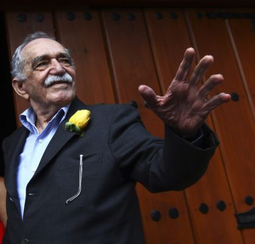

Los últimos días de García Márquez
El Nobel colombiano el 6 de marzo pasado, día de su cumpleaños 87. / EDGARD GARRIDO (REUTERS)
JUAN CRUZ México 21 ABR 2014 - 00:15 CET
Gabriel García Márquez murió a las 12.08 del mediodía del último jueves en su casa de México, un día antes de que un terremoto escala 7,2 sacudiera la ciudad en la que él escribió Cien años de soledad y donde transcurrió medio siglo de su vida. La causa inmediata de su muerte fue un paro cardíaco, pero no es aventurado decir que en el desenlace fatal tuvo que ver el deterioro general de su salud. Una semana antes había sido ingresado para cuidarle una afección pulmonar. Una vez que se alivió esa bronquitis, los médicos aconsejaron a la familia que sometieran al paciente a un proceso de cuidados paliativos. En esa situación estuvo atendido por un médico que le visitaba tres veces al día. Murió en paz, sedado, sin dolores, rodeado de su mujer, Mercedes Barcha, de sus dos hijos varones, Gonzalo y Rodrigo, y de sus cinco nietos. En Cien años de soledad escribió: Morirse es mucho más difícil de lo que uno cree. Alrededor el estupor que causa cualquier muerte fue atenuado por una lenta espera en la que ni la familia ni los amigos, y ni siquiera los medios, hicieron aspavientos. Había en éstos una pugna por saber si en efecto fue el cáncer que padeció el que había acabado con la vida de Gabo. En realidad fue el tiempo el que acopió todas las causas y las hizo desembocar en una sola: Gabo está muerto, el autor de Cien años de soledad dejó esta vida sintiendo que se iba yendo. Alrededor tuvo una atmósfera de serenidad, a la que contribuyeron Mercedes y el resto de la casa. Algunos medios reclamaron más información de lo que había sucedido, o que ésta se facilitara con más prontitud. No está en la tradición de Gabo, que también debe ser de su mujer avisar de lo que les resulta propio. Si ya lo saben, ¿qué más han de saber? Murió, no hay parte. A veces se ponía a leer sus propias obras y preguntaba: '¿y cuándo yo escribí esto estaba drogado o qué? García Márquez tenía 87 años, que cumplió el 6 de marzo pasado, cuando el público lo pudo ver por última vez. El Nobel de Literatura de 1982 había sufrido un cáncer del que se trató con éxito en Los Ángeles, donde vive su hijo el cineasta Rodrigo. A lo largo del tiempo esa enfermedad acompañó las especulaciones, de modo que en torno a las circunstancias en que vivía se construyó un oscuro árbol mitológico que luego enlazó con la diatriba pegajosa sobre lo que le ocurría a su memoria; si sus lagunas eran consecuencia de esa importante afección o si advertían de un alzheimer o una demencia senil. Ante la corriente de rumores la familia actuó como ahora ante la más importante noticia de la muerte: naturalidad y exposición. García Márquez ha seguido estando presente en saraos literarios e incluso en bodas (recientemente inauguró la bolera que construyó un amigo), ha ido con Mercedes Barcha a actuaciones públicas de músicos caribes y cada año, desde 2006, cuando cumplió ochenta años y se empezó a decir que se le iban las cosas de la cabeza, salió todas las veces de su casa, con la rosa amarilla en el ojal para celebrar con sus vecinos un año más de su vida y para ahuyentar, con ese color los malos farios, pues mientras haya flores amarillas nada malo puede ocurrirme. En todo ese tiempo, cuando tuvo encima admiradores y también fisgones, el Nobel caribeño multiplicó su capacidad para integrarse en los ambientes más festivos de Cartagena y de México y desarrolló una facultad que quizá tenía atenuada: la de sonreír. También se acercó a los otros, recuperó una simpatía de la que hizo gozar a a los demás. Para él mismo se reservaba la coña marinera, que los colombianos llaman mamadera de gallo. A veces se ponía a leer sus propias obras, como si las estuviera reconstruyendo. Y preguntaba a los que tenía alrededor: Ven acá, ¿y cuándo yo escribí esto estaba drogado o qué?. Y luego se arrancaba a sí mismo una carcajada. Ya en este periodo no tuvo tan en cuenta las frialdades de la fama; después de Cien años de soledad la fama, le dijo un día a su amigo Plinio Apuleyo Mendoza en El olor de la guayaba, estuvo a punto de desbaratarme la vida ( ), perturba el sentido de la realidad, tal vez tanto como el poder, y además es una amenaza constante a la vida privada. Por desgracia, esto no lo cree nadie mientras no lo padece.